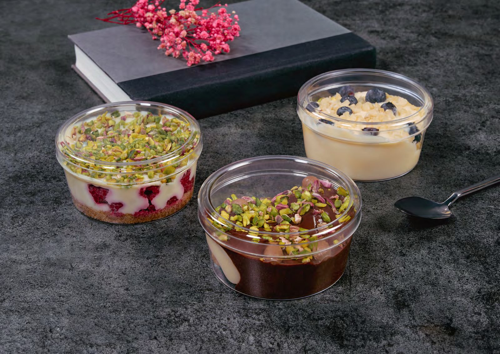

Optik berraklık
Yüksek şeffaflıkta polistiren gövde; kremanın rengini, sosun parlaklığını, katmanın çizgisini olduğu gibi geçirir. Buğulanmayan yüzey dokusu.
Hakkımızda
VITREAPLAS, sütlü tatlı ve sunum ambalajlarında berraklık, tam kapanma ve vitrinde düzen üzerine kurulu bir seçki sunar. Aşağıda malzemeyi, kullanım alanlarını ve çalışma sürecimizi bulacaksınız.
01 Yaklaşım
Yüksek şeffaflıkta polistiren gövde; kremanın rengini, sosun parlaklığını, katmanın çizgisini olduğu gibi geçirir. Buğulanmayan yüzey dokusu.
Gövde ile kapak arasında ölçü toleransı milimetrenin altında. Taşımada dökülmeyen, açıldığında tak diye ayrılan bir kilit hissi.
İstiflenebilir formlar, standart koli ölçüleri. Dolapta hizalı bir vitrin, depoda öngörülebilir bir hacim.

02 Kristal etki
Ambalaj bir kutu değil, ürünün ilk vitrinidir. VITREAPLAS formları tatlının silüetini bozmadan taşır: kenarlar keskin, yüzey pürüzsüz, ışık geçişi net.
04 Malzeme & yapı
Gövde yüksek şeffaflıkta PS, kapak esnek ve şeffaf PET. İki malzeme birbirini tamamlayacak toleransta üretilir: kapak baskıyla oturur, çekmeyle açılır.
05 Kullanım alanları
07 Süreç
Ürününüzün hacmini ve sunum biçimini söyleyin; uygun 2–3 formu ücretsiz numune olarak gönderelim.
Koli adedi ve yıllık tahmini tüketiminize göre kademeli fiyat. Sabit fiyat garantili dönem opsiyonu.
Stoklu ürünlerde 48 saat içinde çıkış. İstanbul içi kendi aracımızla, yurt içi anlaşmalı kargo ile.
08 Sık sorulanlar
Stoktaki modellerde minimum 1 koli. Karma koli (aynı sevkiyatta farklı modeller) mümkündür. Özel renk veya özel kalıp taleplerinde minimum adet ürüne göre değişir.
Evet. Gövde ve kapak ayrı koli birimleriyle sevk edilir; böylece elinizde kalan parçaya göre yalnızca ihtiyacınız olanı tamamlarsınız. Ürün kartlarında kapak koli adetleri ayrıca belirtilir.
PS gövde −18 °C'ye kadar kullanıma uygundur. Şoklama sonrası uzun süreli dondurucu saklamada kapaklı modelleri tercih etmenizi öneririz.
Ambalaj üzerine doğrudan baskı yerine banderol ve etiket çözümü öneriyoruz: hem daha ekonomik hem de ürün değiştikçe tasarımı güncelleyebiliyorsunuz. Etiket ölçüsü için form yüzeylerini paylaşıyoruz.
İlk numune seti ücretsizdir; kargo alıcı ödemelidir. Üç modele kadar numune gönderiyoruz.